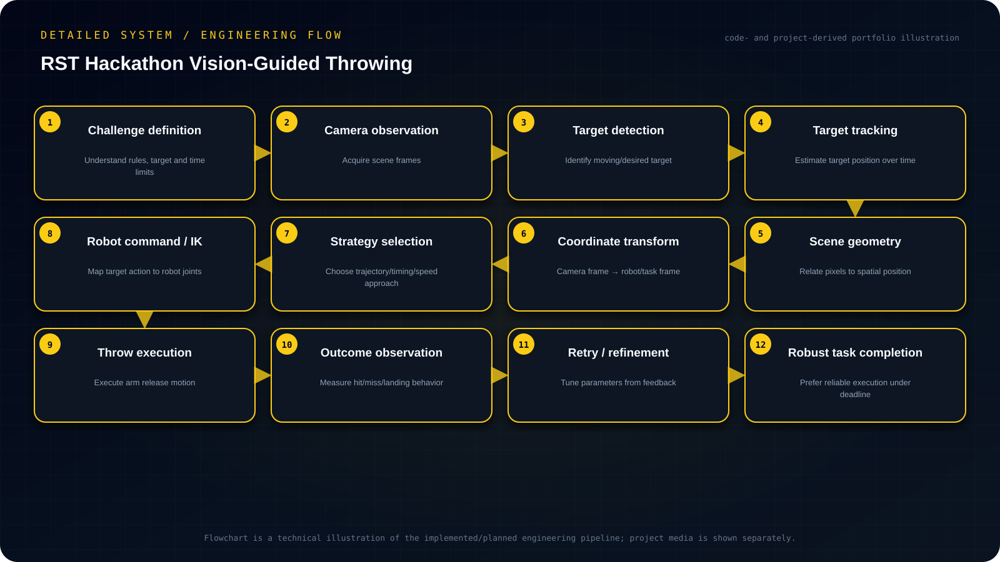

Objective
Rapidly integrate computer vision, target tracking, coordinate transformation and robot-action planning into a robust hackathon system capable of converting visual target observations into executable ball-throw actions under strict time constraints.
- Detect and track the relevant target state from camera observations.
- Transform observations from camera coordinates into a robot/task coordinate frame.
- Choose a practical throw/action strategy that can be implemented and debugged within the hackathon.
- Close the loop by observing the outcome and refining the strategy while prioritizing reliability.
My contribution
- Integrated visual tracking with coordinate transformation logic and robot-arm action execution.
- The team developed a ball-throwing strategy and iterated on the full perception-to-action chain rather than optimizing the vision stage in isolation.
System architecture
Camera/scene observation → target tracking/localization → coordinate convention/transform → strategy logic → robot-arm command sequence → throw execution.

Read the architecture as text
- Challenge definition — Understand rules, target and time limits
- Camera observation — Acquire scene frames
- Target detection — Identify moving/desired target
- Target tracking — Estimate target position over time
- Scene geometry — Relate pixels to spatial position
- Coordinate transform — Camera frame → robot/task frame
- Strategy selection — Choose trajectory/timing/speed approach
- Robot command / IK — Map target action to robot joints
- Throw execution — Execute arm release motion
- Outcome observation — Measure hit/miss/landing behavior
- Retry / refinement — Tune parameters from feedback
- Robust task completion — Prefer reliable execution under deadline
Implementation
Integrated visual tracking with coordinate transformation logic and robot-arm action execution. The team developed a ball-throwing strategy and iterated on the full perception-to-action chain rather than optimizing the vision stage in isolation.
Engineering decisions
The strongest engineering decision was scope control: simplify the strategy enough to make the entire system dependable. That trade-off contributed to a third-place finish.
Challenges & debugging
The system had to convert camera observations into usable robot actions within a very short development window, while still being reliable enough for competition attempts.
Validation
Repeated full task attempts were used to expose failures across perception, transforms and motion. Under time pressure, the team intentionally prioritized the most reliable executable strategy rather than adding higher-risk features that were not sufficiently validated.
Outcome & boundaries
Third-place team finish through a reliable vision-guided ball-throwing strategy.
Project sources
Implementation notes and available project sources. Public code is linked where available; descriptive diagrams are not independent validation.
No public repository is linked for this project.


{kind=link}